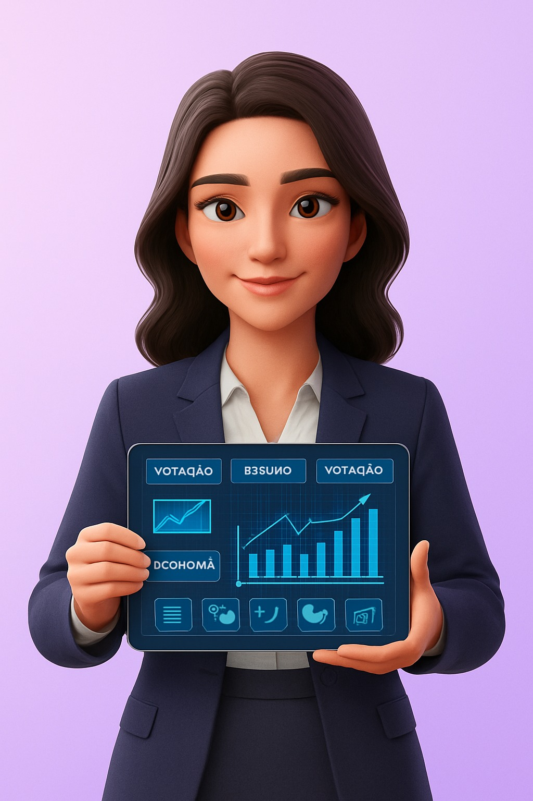

O LegisClara coleta legislações complexas, simplifica com IA e cria vídeos educativos automáticos para engajar a população nas decisões que importam.

100% Python
Vídeos Verticais
Ciclo Automático
Integração direta com APIs do Senado e Câmara para buscar PECs, PLs e MPs em tempo real.
Utiliza Claude API para traduzir "juridiquês" para linguagem simples de 8ª série.
Criação automática de roteiros, narração (ElevenLabs) e avatar animado (D-ID).
Postagem automática no Instagram Reels e LinkedIn com captions otimizadas.
Monitoramento de comentários para entender o sentimento da população sobre a lei.
Envio de PDFs estruturados para gabinetes com a opinião pública sintetizada.
APIs do Senado e Câmara fornecem os dados brutos.
Simplificação, extração de polêmicas e roteirização.
Geração de voz neural e animação do avatar Clara.
Distribuição automática para o público alvo.
Relatórios de sentimento enviados aos parlamentares.